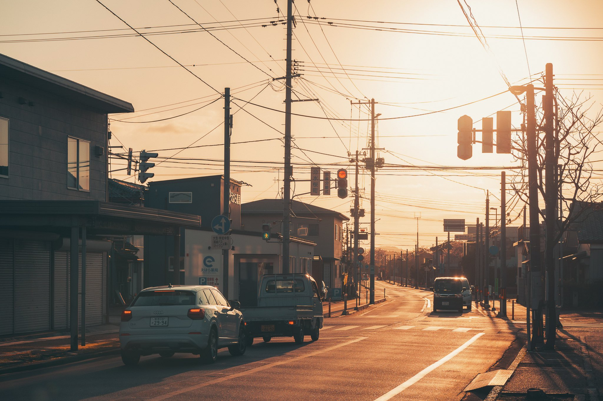

Esto es alucinante. En solo cuatro horas ya he visto miles de cosas frikis y he sentido mi primer terremoto. Durante el viaje en tren desde el Aqeropuesto de Narita hasta el centro de Tokio donde estoy ahora mismo he visto japoneses de todas las edades leyendo manga, colegialas con sus smartphones de última generación que no veremos en España hasta dentro de unos años, posters de publicidad donde todo está escrito en japonés. Además, se ve mcuha tecnología por todos lados , y todo muy cuidado y muy limpio por las calles. En cuanto pueda subiré más fotografías.
Eso sí, aquí hay muy poca gente extranjera, así que los japoneses se nos quedan mirando un poco descaradamente. Ahora estamos en el centro donde acabamos de sentir un terremoto y hemos comprado comida rápida japonesa. Es todo muy surrealista, es como un mundo aparte donde todo estotalmente diferente a lo que estamos acostumbrados en España, ya os iré contando, pero esto lo teneís que vivir al menos una vez en vuestra vida.
Iré publicando en cuanto me sea posible.